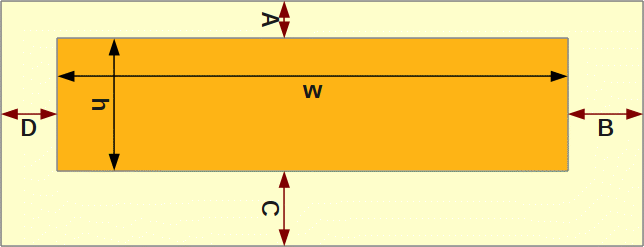
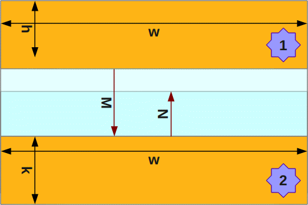

Most web developers, when they find they have no other choice than to turn their hand to CSS, find margins a pain in the rear. This is because, unlike padding, the margins on a given element don't always appear the same on the page; the resulting space depends on what other elements are near them. But while rigid predictability is sometimes the most important aspect of some page structure, other arrangements of elements need a more subtle approach.
Padding is easy
Padding feels like a physical thing, analogous to the metal spacers once used in letterpress typesetting. It's like a second, inner border: inviolable, rigid in their shape. So a programmer "knows where he is" with padding, and if you convert ems or points to pixels on the fly you can pretty much "count the number of pixels in an element's padding" based on the original CSS declarations themselves combined with the size of that one element. You don't need to worry about what the neighbouring content will do, unless you've already made it behave weirdly with your own CSS rules applied to e.g. the other element's overflow.

You know where you are with padding. A declaration of { padding: A B C D } on an element of browser dimensions w × h yields an element area of wh and padding area of w(A+C) + h(B+D) + AB + BC + CD + DA. Always.
This means that padded elements will always take up the amount of extra space that you specify. On the one hand, this is very useful for pixel-perfect design implementation. If you have headers and footers - site livery - which have pretty much the same content on every page of a site, you can add paddding to the relevant elements and know that they will look just right. Because padding is simple, it's also less likely to be buggy (you avoid the IE6 double margin bug on your floated-left and -right devices).
However, padded elements are simple in another sense: they're stupid. Sometimes it feels like they're behaving like a man who's forgotten about the plank he's carrying across his shoulders, and barge other elements out of the way when a more subtle effect is required.
Margins are hard
Margins, unlike paddings, pay attention to what's around them. The top and bottom margins of adjacent elements will, in certain circumstances, collapse onto each other. This sounds like either: just something you have to take into account; or, worse, a tricksy annoyance. But it's really because margins are not about pixel perfection, in the sense of making sure that a given element is a precise number of pixels from its parent, or from the top of the page.

Elements decide where they are with margins. The top element 1 has { margin-bottom: M }, whereas the lower element 2 has { margin-top: N }. The actual space between the elements (assuming no padding or borders) is M or N, whichever is greater: max(M,N).
Margins are intended to improve legibility and overall presentation when the designer cannot predict in advance the order of every single element. Content flow on the page can be improved by margins in a way that padding can't achieve: they attempt to lay out the content using whitespace that's as aesthetically and readably pleasing as possible, given many combinations of elements. This can be more important than you think in pages with a lot of (potentially user-generated) content: when you have lists, headings, paragraphs and blockquotes all jumbled together in any old order, how can you dictate the padding between any given two elements?
No rules only heuristics
Margins sound like they provide a lot of flexibility, but how should they be used in practice? If margin-top and margin-bottom are likely to collapse into those of other elements, is there a straight choice to be made between them; or, as a (probably too discursive) Stack Overflow question has it, which do you prefer and why?
The simple answer is that there is no simple answer. This is a conversation you must have with the original designer, if you're not sure what to implement. But generally unless the design has some odd layout that screams "ask the designer what they meant by this", here is a rough guide - a set of heuristics rather than rules - to establishing good margin and padding usage in your CSS. You don't need to follow these to the letter; but they're a good starting point.
- Paragraphs and ordered/unordered/definition lists should have symmetrical top and bottom margins. This is because they're "symmetrical" elements: a paragraph typically doesn't care about the content before or after it, but is just part of the page flow. It also means that the paragraph--list gap is the same as the list--paragraph gap, which makes a kind of semantic sense. Depending on the "tightness" of the design whitespace, paragraphs will typically have 0.5-1.5 em vertical margins; lists could have as much as 2em.
- Headings need bigger margins above than below. This is because while a heading's text marks the beginning of one section, the whitespace above it implies the *end* of the previous section. Headings should therefore bind more tightly to what's below them.
- Blockquotes can be spaced vertically like lists. They also need horizontal spacing, which browsers typically apply with margins. You should be able to do this too, although padding will work just as well and will also provide you with a decent canvas for things like speech bubble backgrounds.
- Structural elements like divs shouldn't need any margins but can inherit the ones from their children. If they're in the header and footer, use padding to make sure they sit correctly next to other elements on all pages.
- However, overall header, footer and section containers (whether this means the dedicated new HTML5 elements or just divs with particular IDs) should have some vertical margins on them, so that there is still nice amounts of space between them and any accidentally un-margined content (or if a paragraph next to the footer would otherwise end up too close.)
- Horizontal margins don't collapse. Because of the aforementioned bugs in IE6, I would typically use horizontal padding instead, unless you're sure that the element is never going to float. The end result is almost the same either way. Exceptions to this rule include when you have a limited choice of markup (you can't use nested divs and horizontal padding instead, for example.) You should still test them
You can start by blindly applying the points above, but please don't assume that they will invariably lead you to the specific design you have to implement. You'll always have to take that step back and consider: what margin will this element "like to have", when it appears on the page? What if this paragraph element (for example) is adjacent to another paragraph, or a heading, or a list? And what might the heading or list have to say about its own margins in that case?
When "it depends" is the best answer
Because margins have a cleverness to them, the temptation is often to out-smart them; to hem them in with extra CSS rules; in effect, to use tricks which make margins behave more like padding. I don't mind these so much, but I think they miss the point off margins, which is: like CSS itself, they do some of the typesetting work, so we don't have to figure it out every time.
This doesn't answer the burning question, though: margin-top or margin-bottom? Who's right? I think it's worth going through some of the discussion on that Stack Overflow question and examining it in the context of "intelligent margins", or maybe "margins giving us intelligent elements" to see whether there can ever really be a last word in the great debate between top and bottom.
I always use margin bottom, which means there is no unnecessary space before the first element.
If you're using margins at all, then you're saying that it's up to the elements to decide what is and isn't unnecessary. If a paragraph needs a bit of air to flow around it, then it will probably still need that if it's at the top of the content area; by using margin-bottom, you're denying the first paragraph its air. Of course, you can fix this by making sure that whatever elements paragraphs are in are always somehow padded away from the elements above them, but you lose the cleverness of margin-collapse during the fixing. Besides, for every design that calls space before the first element "unnecessary", there will be another design which makes that same claim about space after the last element.
Depends on context. But, generally margin-top is better because you can use :first-child to remove it.
Yeah I usually use margin-bottom as well and then assign a last class to the last one in the bunch.
These both seem to be falling into the same trap as the previous question, but coming to that trap from a different direction. Having to establish special rules for special elements, in order to make a container wrap tightly around its contents, seems an odd thing to do. If your container is tight, then you have to implement extra rules to make sure that container keeps its distance from other elements. Which you can force with other layout elsewhere, but it's what margins are meant to guarantee.
Incidentally, as an aside:
This really depends on what you're designing it for and why. Something you could do, which is helpful, is setup generic styles for default padding/margins you commonly will be using
I would assign spacing on elements in a semantic fashion, and use contextual selectors to define behavior for that collection of elements.
I agree with the second poster completely here. In fact, one of the reasons I didn't put a glib "it depends" answer on the SO question in the first place was that the first of these two posters started his response in the same way, but then the rest of his answer was wrong enough that I was wary of joining an "it depends" camp.
But as I thought more and more about the original question, and all its SO answers,, I realised there was another reason that I didn't want to answer it directly. There is simply no answer within the context defined by the question itself, and shaped by all the existing replies, that I would consider valid. No combination of margin-top, margin-bottom and rules about contexts can themselves help dictate good CSS practice. I did think initially that the question should be closed as subjective, but maybe instead it would be better to answer it: not, "it depends"; but, "it's a bigger problem than the question permits."